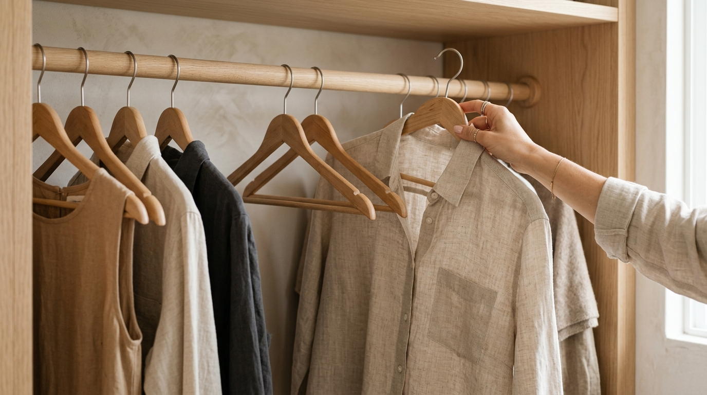

Open your wardrobe doors on a busy weekday morning. The hanging rail is packed from wall to wall. Every hanger is jammed tightly against its neighbor, sleeves are squished together, and fabrics overlap so closely that you can only see the collar of each shirt.
You may own plenty of clothes you genuinely love, but getting dressed feels frustrating. Finding one specific blouse requires forcefully shoving a dozen hangers aside, pulling a garment out leaves neighboring pieces wrinkled, and trying to hang a clean shirt back onto the rod feels like wrestling with a solid wall of fabric.
When getting dressed feels stressful, we often assume we need to do a brutal wardrobe purge, throw away half our belongings, or buy expensive closet shelving. But in most rental bedrooms and reach-in closets, that is not the real issue.
A closet can be 100% full of good clothes and still be functionally difficult to use. When garments are compressed together with zero breathing room, your closet loses visual readability. The Empty Hanger Rule is an adaptable organizational principle that prioritizes usable capacity over maximum density: SEE → CHOOSE → RETURN.
The Real Problem: A Full Closet vs. a Usable Closet
In standard home design, people often measure closet storage strictly by linear inches: “How many garments can I physically cram onto this 48-inch rail?”
While filling a rail from end to end maximizes physical storage volume, it dramatically reduces day-to-day usability:
- Visual Fatigue: When fifty shirts are pressed tightly together, your eyes cannot quickly register colors, textures, or silhouettes. You end up wearing the same three shirts on the edge simply because they are visible.
- Retrieval Resistance: Pulling a garment from a tightly packed rod causes neighboring hangers to catch on sleeves, pulling clothes off hangers or crushing collars.
- Return Friction: When hanging an item back up requires two hands and significant effort to wedge the hanger between packed coats, clean clothes get left draped over chairs or nightstands instead.
To see how daily habits keep bedroom surfaces clear, explore our framework on where to put clothes you've worn once.
What Is the Empty Hanger Rule?
The Empty Hanger Rule is a practical physical principle:
VISIBLE SPACE → EASIER CHOICE → EASIER RETURN

The Empty Hanger Rule does not mean you must keep a rigid number of empty hangers or leave half your closet bare. Instead, it means intentionally preserving a modest 2 to 3-inch breathing gap between clothing categories—often marked by two or three empty hangers resting naturally on the rod.
These empty hangers serve two functional purposes:
- Visual Chapter Breaks: They create clear visual boundaries between categories (e.g., between everyday work shirts and weekend knitwear), making the rail instant to scan.
- Physical Gliding Buffer: They ensure the rail is never at 100% mechanical compression, allowing hangers to slide smoothly when you pull a piece out or put it back.
"Maximum capacity is not the same as maximum usability. Your closet doesn't need to look empty—it just needs enough breathing room to be readable."
Why a Packed Closet Can Be Harder to Use
When you eliminate all buffer space on a closet rod, four distinct friction points emerge:
1. Visibility Disappears
Garments overlap completely. You only see a sliver of fabric rather than the garment's shape, causing you to forget what you actually own.
2. Scanning Takes Effort
Instead of taking a 2-second glance across your wardrobe, you have to manually flick through every hanger one by one.
3. Choosing Becomes Awkward
Pulling out a delicate silk shirt or heavy wool cardigan drags neighboring items along with it, often leading to snags or items slipping to the closet floor.
4. Returning Fails Completely
If returning a shirt requires brute force to widen a gap on the rail, human nature naturally defaults to leaving the garment on a dresser or chair. For more on behavioral routines, read about our closet wear audit framework.
The SEE → CHOOSE → RETURN Framework
A well-functioning wardrobe supports the entire lifecycle of an outfit:
1. SEE — Visual Scanning
When sections are grouped with modest breathing space, you can scan your entire wardrobe in three seconds. You see tops, trousers, and outerwear as distinct groups rather than an overwhelming mass of fabric.
2. CHOOSE — Smooth Retrieval
With an intentional 2-inch buffer, hangers glide effortlessly along the rod. You can slide a garment out with one hand without disturbing adjacent hangers or wrinkling sleeves.
3. RETURN — Frictionless Reset
When laundering is done, putting clothes away takes seconds because the rail has room to accept the hanger immediately. Organization succeeds when the return path is as easy as the retrieval path.
How Much Empty Space Should You Leave?
There is no rigid formula or mandatory number of empty hangers. The ideal breathing room varies based on your wardrobe and storage dimensions:
- For Lightweight Tops & Shirts: A 1 to 2-inch gap between groups is plenty to keep hangers gliding smoothly.
- For Bulky Knitwear & Jackets: A 3 to 4-inch gap prevents thick wool shoulders from compressing and creasing each other.
- The "One-Hand Slide" Test: Place your hand on a hanger in the center of the rail. If you can slide it 3 inches to the left without pushing the entire rod of clothes, your rail has sufficient breathing room.
To learn how hanger choice influences rail spacing, explore our guide to 5 closet rules that make any closet look expensive.
How to Apply the Rule Without Decluttering Your Wardrobe
You do not need to purge half your clothes to create usable breathing room. Follow this simple 6-step reset:
- Pick One Category: Start with just your everyday tops or work shirts.
- Group by Sub-Category: Group short sleeves together, then long sleeves, then button-downs.
- Identify Compressed Zones: Look for sections where hangers are tightly overlapped and pinched.
- Relocate Non-Hanging Items: Move folded t-shirts, workout gear, or heavy sweaters to shelves or drawers rather than letting them crowd the hanging rail.
- Insert a 2-Hanger Buffer: Place two empty hangers at the end of the shirt section before the next category begins.
- Test the Glide: Slide hangers back and forth to confirm that every piece can be selected with zero resistance.
For more rental-friendly ideas on maximizing tight spaces without construction, see our guide on how to organize a rental closet without drilling.
Try It With One Closet Section First
Instead of tearing apart your entire bedroom closet on a Sunday afternoon, test the Empty Hanger Rule on your single most active category:
Take your 10–12 most frequently worn weekday tops. Group them together at eye level. Shift the rest of your hanging items slightly to the side so your core tops have 2 inches of free rail space on either side.
Live with this arrangement for four days. Notice how much faster it is to get dressed in the morning, how easy it is to find what you want, and how putting your shirt away at the end of the day feels completely effortless.
Organize by Category, Then Protect Visibility
Logical grouping amplifies the power of breathing room:
- Everyday Work / Social Tops: Front and center on the most accessible rail section.
- Trousers & Skirts: Grouped together on matching pant hangers.
- Layers & Light Cardigans: Positioned adjacent to tops with a 2-hanger empty buffer between them.
- Occasional / Formal Wear: Staged at the far end of the rail where less frequent access won't obstruct daily dressing.
To identify common layout mistakes that make closets feel cramped, check out our guide to 5 closet mistakes making your closet feel smaller.
What If Your Closet Is Genuinely Over Capacity?
If you attempt to create breathing room but your rod remains packed solid from wall to wall, your closet may be experiencing volumetric overflow:
- The Seasonal Shift: Store off-season heavy winter parkas or summer dresses in under-bed storage containers or high upper closet bins during the off-season.
- The Shelf Migration: Bulky wool sweaters should never be hung (hanging stretches the shoulders)—moving knitwear to shelf cubbies instantly frees up 8–10 inches of rod space.
- The Double-Hanging Solution: In tall reach-in closets, adding an inexpensive tension hanging extender doubles your horizontal rail space without drilling.
For more space-saving strategies, explore our full collection of 7 small closet organization ideas that actually save space.
Small-Apartment and Renter-Friendly Adaptations
In studio apartments and compact reach-in wardrobes, space is precious. Apply these small-space adaptations:
- Switch to Slim Non-Slip Hangers: Replacing bulky wooden or tubular plastic hangers with slim velvet hangers instantly recovers 30% of horizontal rail space while keeping garments aligned.
- Use Vertical Tier Hangers for Pants: Grouping 4 pairs of trousers vertically on a single tiered hanger frees up horizontal rail inches for tops.
- Protect Your Core 80%: Give your most-worn daily essentials generous breathing room, while tucking occasional formal wear closely at the edges.
Before and After: What Actually Changes?
Notice how preserving modest buffer space transforms closet navigation:
| Closet Action | Before (100% Compressed Rail) | After (The Empty Hanger Rule) |
|---|---|---|
| Morning Scanning | Pushing hangers apart to inspect obscured collars | Full visual clarity across distinct category groups |
| Garment Selection | Tugging a shirt out while neighboring sleeves catch and wrinkle | Smooth, 1-second one-handed glide off the rail |
| Putting Clothes Away | Struggling to force a hanger into a tight, resisting gap | Effortless return into a clear, open hanging space |
| Bedroom Surfaces | Clean clothes pile on chairs because hanging is annoying | Clothes returned immediately because the rail is accessible |
The Simple 3-Question Closet Test
Save this quick diagnostic test to check your wardrobe's usability:
The 3-Second Usability Check:
- 1. CAN I SEE IT?
Can I identify individual garments without manually shoving hangers apart? - 2. CAN I CHOOSE IT?
Can I slide one piece off the rail smoothly without snagging adjacent clothes? - 3. CAN I RETURN IT?
Can I hang a clean item back up in under two seconds with zero resistance?
If all three are yes, your closet is functioning at peak usability. If any answer is no, simply create a 2-inch breathing buffer in that category.
For more space-saving wardrobe ideas, browse our comprehensive guide to closet organization ideas for every space.
Frequently Asked Questions
Not necessarily. Two or three matching empty hangers can act as natural physical spacers between categories, but if you prefer a cleaner look, you can simply leave a 2-inch empty gap on the rod and store surplus hangers in laundry bins.
Divide the rail into two distinct halves with an empty hanger buffer in the center. Apply the rule to your everyday core pieces first, while moving bulky suits or formal wear to the outer edges.
We always recommend folding knitwear and heavy sweaters on shelves or in drawers. Hanging heavy knits stretches the shoulder seams and consumes 3x more horizontal rail space than lightweight shirts.
Are you 18-24 or a Student? Get 6 Months of Prime for $0!
Limited Time Offer (Ends Oct 9): Enjoy fast, free shipping, unlimited streaming, $0 food delivery (Grubhub+), fuel savings (10¢/gal), Prime Reading, unlimited Amazon Photos storage, and exclusive grocery deals. Claim your 6-month free trial of Prime for Young Adults today.
Try Prime for Free →